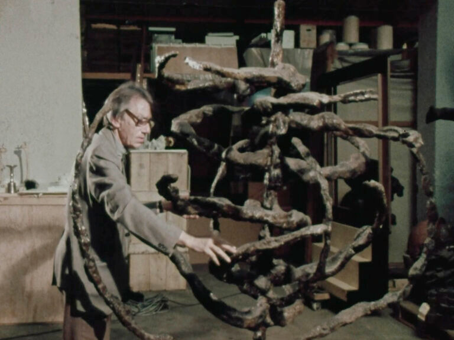

Sarah Maldoror: Alberto Carlisky / Miró / Wilfredo Lam / Vlady / Ana Mercedes Hoyos, Painter (1980 / 1979 / 1980 / 1989 / 2008)
Sarah Maldoror: Alberto Carlisky / Miró / Wilfredo Lam / Vlady / Ana Mercedes Hoyos, Painter (1980 / 1979 / 1980 / 1989 / 2008) · 4m / 5m / 4m / 24m / 13m · DCP
Maldoror as art historian: in five artist portraits of Alberto Carlisky, Joan Miró, Wilfredo Lam, Vlady Rusakov, and Ana Mercedes Hoyos, the filmmaker documents the playful and political implications of artistic practice. The films present a vision of “painting [as] an act of decolonization not in a physical sense, but in a mental one,” as Lam states in his eponymous film.